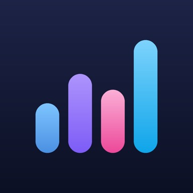

AINOKORI
See what your AI has left.
Claude Code, Codex, Gemini CLI, GitHub Copilot. The more you switch between them, the harder it gets to know how much each one has left. AINOKORI has your Mac read the answer and deliver it to your iPhone and Apple Watch.
iOS 18.0 or later for iPhone and Apple Watch, plus a companion Mac app requiring macOS 14.0 or later
Six gauges, right in your pocket
-
All four, on one screen
Claude Code, Codex, Gemini CLI, and GitHub Copilot line up their remaining capacity in one column. The big number is how much is left, as a percentage — switch to percent used in Settings if you prefer. Tools with more than one window, like a 5-hour window and a weekly window, are grouped together.
-
Know when it comes back
“Resets in 2h 18m.” Once you hit the limit, AINOKORI shows when each window opens back up. When a reset time can’t be read, it says “unknown” rather than guessing.
-
Your Mac reads it, your iPhone gets it
A small app that lives in your Mac’s menu bar reads the usage records each tool leaves on this Mac. The handoff runs only through your own Apple ID’s iCloud — we have no servers of our own.
-
We’ll let you know when it runs low
You’ll get notified when your capacity runs low, and when a usage window resets. Every notification is assembled right on your iPhone, without passing through our servers or anyone else’s. You keep working, and just know when it’s time to switch.
-
See it without opening the app
Check your remaining capacity from a Home Screen widget or your Apple Watch, without opening the app. Widgets come in small and medium sizes; tap one to open that service’s details.
-
When we can’t get it, we say so
How much detail we can read varies by tool. AINOKORI shows “limit unknown” or “not available yet” exactly as they are, rather than guessing at a number. When a limit is estimated, it’s always labeled “estimated.”
Free plan includes remaining capacity and reset times for all four services, the widget, Apple Watch, 7 days of history, and notifications for low capacity and resets. 90 days of history, usage statistics, a forecast of when you’ll hit the limit, fine-grained notification thresholds, a daily report, and a suggestion for which AI to use next are AINOKORI Pro features.
We don’t read your code or your conversations
The Mac app reads only the usage records each tool leaves on this Mac. It never reads the text of your prompts or responses, your source code, credentials, project names, or file paths. The Mac app doesn’t connect to the network, either. See the Privacy Policy for details.
Never wonder which one to use next.
Common questions are answered on the support page. For feedback or to report a problem, contact tempuraapps.support@gmail.com.
Trademarks
AINOKORI is not affiliated with, and is not approved or endorsed by, Anthropic, OpenAI, Google, GitHub, or Microsoft. Claude and Claude Code are trademarks of Anthropic PBC; Codex and OpenAI are trademarks of OpenAI, Inc.; Gemini and Google are trademarks of Google LLC; GitHub and GitHub Copilot are trademarks of GitHub, Inc. This app uses these names solely to identify the corresponding tools, and does not use any of these companies’ logos or icons. The values shown are read from, or estimated from, local records left on your own Mac — they are not official figures provided by any of these companies.